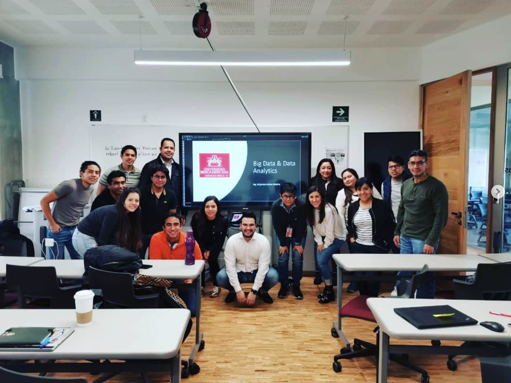

Big Data & Analytics — Universidad Iberoamericana

I had the honor of becoming the first instructor of the inaugural Big Data and Data Analytics diploma program at Universidad Iberoamericana — an unforgettable experience that left me inspired, humbled, and grateful.
Sharing the knowledge I've gathered across my career with eager minds ready to embrace the world of data was deeply rewarding. Witnessing that spark of curiosity in every student reminded me of the profound impact education can have.
Big Data and Analytics aren't just technical skills; they are gateways to new perspectives — enabling data-driven decisions and transforming the world around us. Being part of a pioneering program laying the foundation for the next generation of data scientists is a dream come true.
I'm thankful for the chance to help shape the future of the data industry in Mexico, to advocate for the power of analytics, and to inspire students toward greatness in this fast-evolving field. This is only the beginning.